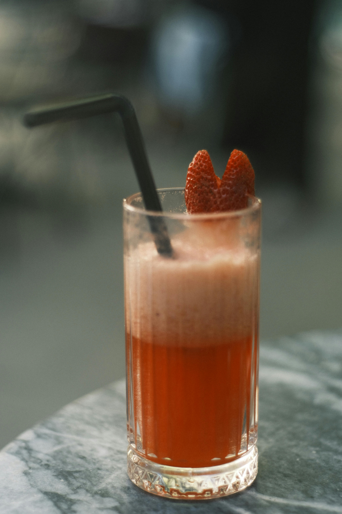

Starwberry Bellini

Description
This will be the center piece at any party!
For when the heats high, this drink will keep your temps alright!
Ingredients
- 3 cups strawberries, hulled and sliced
- 1/4 cup sugar
- 1 tablespoon liquor of any kind
- 1 1/2 cups chilled sparkling wine
- 3 large whole strawberries
Steps
- Gather all ingredients
- Blend hulled strawberries, sugar, and your liquor in a blender until smooth. Chill in the refrigerator for 10 minutes.
- Divide the strawberry mixture among three champagne flutes.
- Pour 1/2 cup sparkling wine into each flute and stir to combine.
- Garnish each glass with a whole strawberry.
- Vola! It's ready to drink!
Home